Устройство для
импульсного намагничивания и размагничивания
ферритовых постоянных магнитов (диаметр до 80 мм, высота до 90 мм)
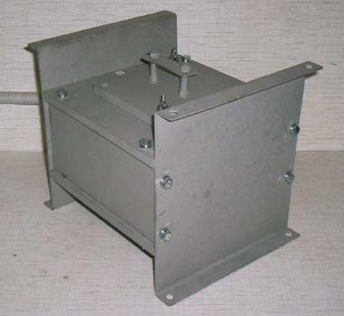
1. Назначение
Устройство намагничивающее импульсное (индуктор) предназначено для работы в составе установок импульсного намагничивания постоянных магнитов [8] в комплекте с различными генераторами мощных импульсов тока [4 - 6] и установок импульсного размагничивания в комплекте с биполярным генератором мощных импульсов тока [4] (практически полное размагничивание переменным затухающим полем) или емкостным накопителем энергии [6] (частичное размагничивание обратным полем). Оно позволяет намагничивать и размагничивать постоянные магниты и магнитные системы с постоянными магнитами [7] на основе феррита бария, феррита стронция и любых других ферритов, а также ЮНД, ЮНДК (ални, алнико). Может применяться в лабораторных или производственных условиях.
2. Технические данные:
3. Конструкция
Эскиз устройства показан на рис. 3.1. Намагничивающее устройство представляет собой цилиндрический соленоид (катушку) со сквозным отверстием – зоной намагничивания диаметром 80 мм и высотой 90 мм. Соленоид зажат между верхней и нижней стальными плитами, крепящимися к боковым плитам и боковым панелям. Верхняя и нижняя плита имеют проходные отверстия, которые закрываются стальными крышками с рукоятками. Крышки могут крепиться к плитам с помощью винтов М6. Доступ к зоне намагничивания двухсторонний. При необходимости намагничивающее устройство можно повернуть на 90 или 180 градусов. Выводы соленоида подключены к силовому кабелю с разъемом для подключения к импульсному генератору. Силовой кабель проходит через боковую панель устройства. Там же на боковой панели имеются клеммы заземления.
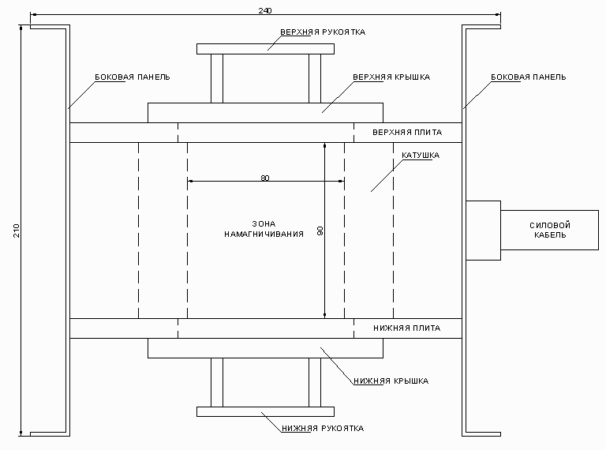
Рис. 3.1. Устройство намагничивающее импульсное (эскиз).
На рис. 3.2 - 3.4 показан внешний вид намагничивающего устройства.
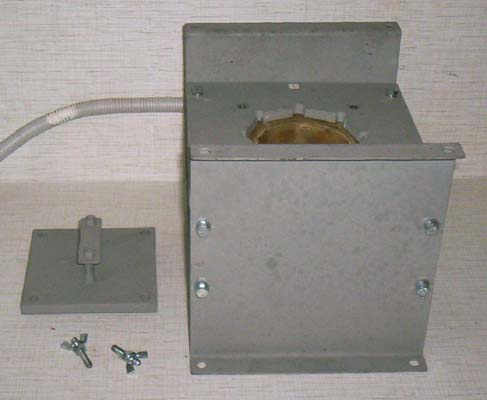
Рис. 3.2. Импульсное намагничивающее импульсного устройство (вид спереди со снятой верхней крышкой).
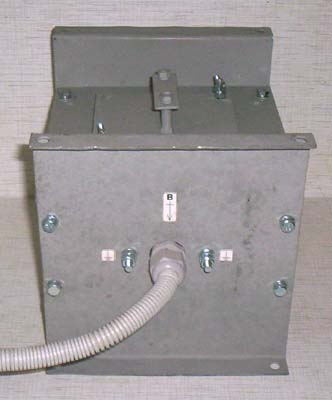
Рис. 3.3. Импульсное намагничивающее импульсного устройство (вид сзади).
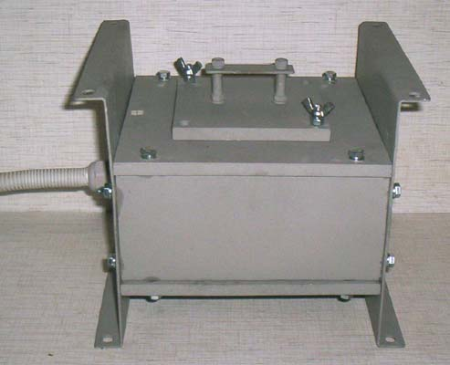
Рис. 3.4. Импульсное намагничивающее импульсного устройство (вид сбоку).
4. Расчет катушки намагничивающего устройства
Расчет параметров катушки намагничивающего устройства, импульса тока и магнитной индукции в ней выполнен с помощью программ Coil [1] и UNI [3]. Результаты расчета показаны на рис.4.1 и 4.2. Катушка намотана на оправке медной шиной прямоугольного сечения 6 х 2 мм2 (приведенный диаметр круглого провода в пересчете на площадь сечения 3.71 мм). Число витков примерно 115, расчетное активное сопротивление 0.06 Ом, расчетная индуктивность 0.88 мГн. Однополярный генератор мощных импульсов тока [5] создает в катушке импульс тока амплитудой примерно 1340 А и длительностью примерно 15 мс. При этом расчетное амплитудное значение магнитной индукции в центре катушки составляет почти 1.4 Тл, что вполне достаточно для намагничивания ферритов любых марок и сплавов ални (алнико).
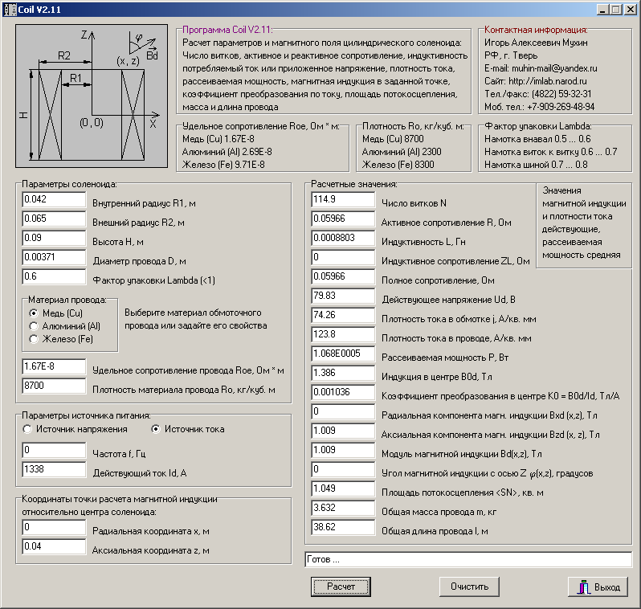
Рис. 4.1. Расчет катушки индуктора с помощью программы Coil: число витков примерно 115, активное сопротивление примерно 0.06 Ом, индуктивность примерно 0.88 мГн.
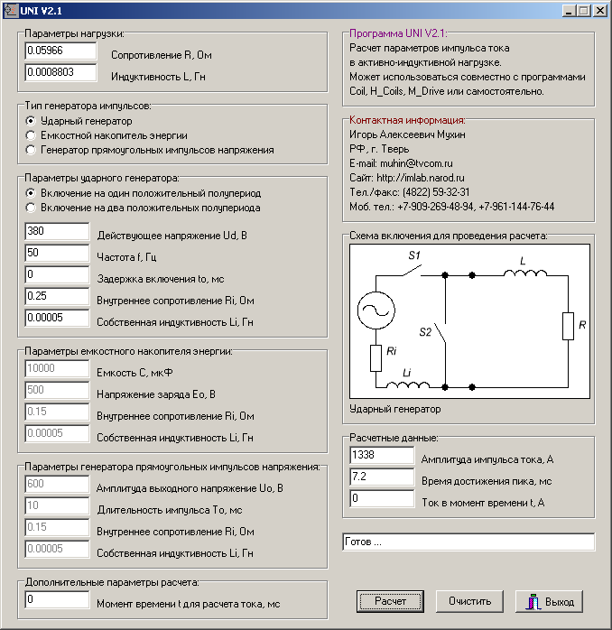
Рис. 4.2. Расчет параметров импульса тока в катушке с помощью программы UNI: однополярный генератор мощных импульсов тока, питающее напряжение 380 В, амплитуда импульса тока примерно 1340 А, длительность - примерно 15 мс (удвоенное время достижения пика).
Перегрев провода обмотки за одиночный импульс тока амплитудой 1388 А длительностью 15 мс рассчитан с помощью программы dTWire [2] и не превышает 0.6 0C (рис. 5.3) в приближении синусоидальной формы импульса.
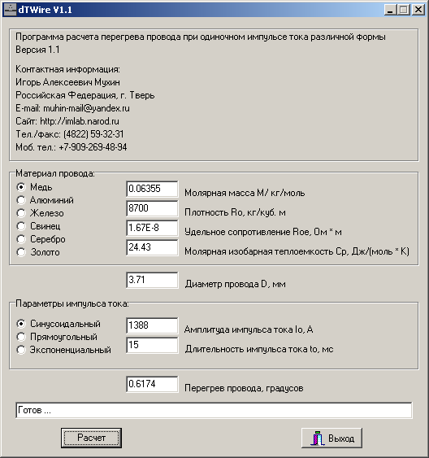
Рис. 4.3. Расчет перегрева обмотки за одиночный импульс тока с помощью программы dTWire.
Установка катушки в магнитопровод (стальной корпус) приводит к увеличению индуктивности, уменьшению амплитуды импульса тока, увеличению его длительности, а также повышению амплитуды магнитной индукции в зоне намагничивания и увеличению однородности намагничивающего поля. Так как поле, создаваемое даже обособленной катушкой без магнитопровода при работе с различными импульсными генераторами оказывается достаточным для намагничивания любых марок ферритовых постоянных магнитов и сплавов ални (алнико), дополнительный расчет с учетом влияния магнитопровода не проводился.
5. Установки импульсного намагничивания и размагничивания
На рис. 5.1 - 5.3 показан внешний вид установок импульсного намагничивания и размагничивания, в которых индуктор скомплектован с различными генераторами мощных импульсов тока. Для удобства работы с намагничивающим устройством могут использоваться различные контейнеры под постоянные магниты, в частности, с дополнительными концентраторами магнитного поля (полюсными наконечниками) для повышения напряженности и однородности магнитного поля в зоне намагничивания или для задания нужного его распределения.
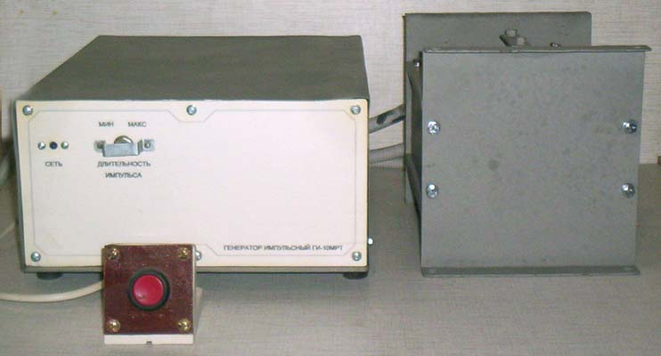
Рис. 5.1. Установка намагничивания в комплекте с однополярным генератором мощных импульсов тока [5].
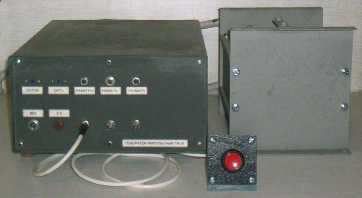
Рис. 5.2. Установка намагничивания и размагничивания в комплекте с биполярным генератором мощных импульсов тока [4].
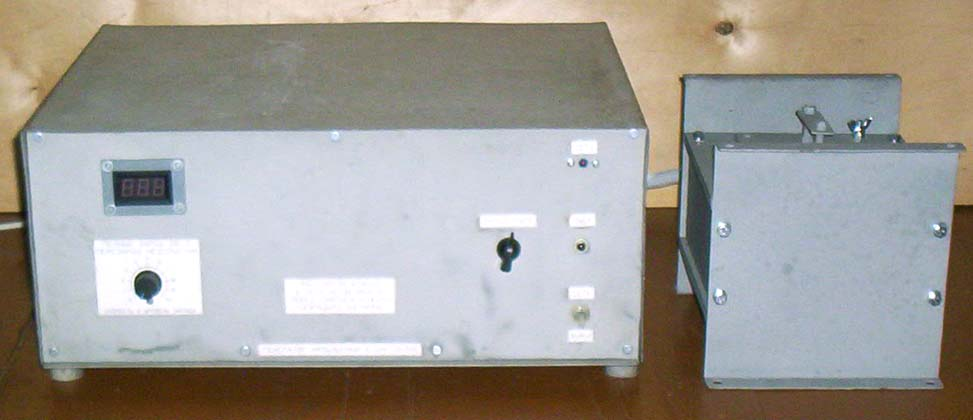
Рис. 5.3. Установка намагничивания и частичного размагничивания в комплекте с емкостным накопителем энергии 1 кДж 500 В [6].
Контроль амплитуды магнитной индукции в зоне намагничивания устройства производился с помощью импульсного тесламетра [8], к выходу "1 В/Тл" которого был подключен осциллограф UTD2102CEL-R. На рис. 5.4 показана форма импульса магнитной индукции в центре зоны намагничивания при работе от емкостного накопителя энергии 1 кДж 500 В, заряженного на 100 %, а на рис. 5.5 - импульс магнитной индукции на уровне нижней крышки устройства. В обоих случаях измерения проводились при снятой верхней крышке намагничивающего устройства. Распределение магнитной индукции в зоне намагничивания достаточно равномерное.
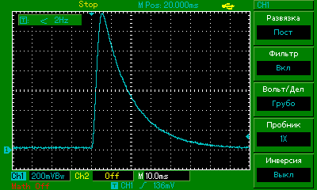
Рис. 5.4. Форма импульса магнитной индукции в центре зоны намагничивания устройства при снятой верхней крышке (генератор мощных импульсов тока - емкостной накопитель энергии 1 кДж 500 В, заряд 100 %): цена деления по вертикали 0.2 Тл/дел., амплитуда магнитной индукции 1.36 Тл.
Рис. 5.5. Форма импульса магнитной индукции на срезе нижней крышки устройства при снятой верхней крышке (генератор мощных импульсов тока - емкостной накопитель энергии 1 кДж 500 В, заряд 100 %): цена деления по вертикали 0.2 Тл/дел., амплитуда магнитной индукции 1.32 Тл.
Устройство эксплуатируется в производственных условиях для намагничивания кольцевых ферритовых магнитов любых марок [7].
Ссылки:
16.03.2025
Альтернативные источники
энергии
Компьютеры и
Интернет
Магнитные поля
Механотронные системы
Перспективные
разработки
Электроника и
технология